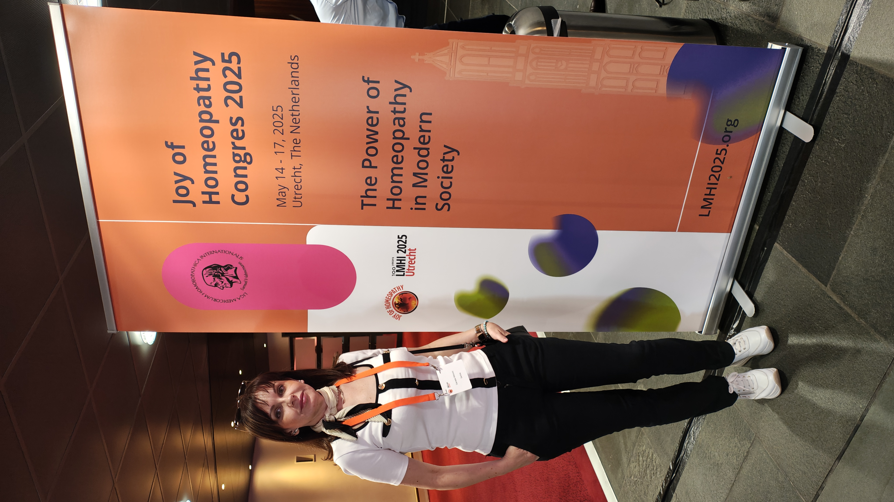

Upoznajte Neru
Da zajedno uskladimo Vašu vibraciju sa prirodom i tako postignemo energetski balans

Moja Priča i Pristup
Moje putovanje u svet homeopatije počelo je iz dubokog uverenja da ljudsko telo poseduje neverovatnu moć samoizlečenja — samo mu je nekada potreban nežan i prirodan impuls da se pokrene u pravom smeru.
"Svaki čovek je svet za sebe – sa svojim emocijama, stresovima, životnim stilom i jedinstvenom energijom. Zato lečimo čoveka, a ne dijagnozu."
Kao sertifikovani homeopata, ne posmatram Vas kroz prizmu vaše trenutne bolesti. Detaljnim razgovorom zalazimo dublje, tražeći koren disbalansa kako bismo pokrenuli trajnu vitalnu silu vašeg organizma.
Obrazovanje i Vizija
Lekar opšte medicine, master javnog zdravlja, diplomirani homeopata, Brainspotting terapeut, Reiki master je put koji sam prošla, da bih shvatila da se naizgled dva različita sveta zapravo mogu spojiti u jedan pristup.
Međunarodni kongresi i kontakti sa kolegama iz celog sveta, otvorili su mi nove spoznaje o primeni homeopatije u praksi poznatih lekara. Znanje i saradnju sa njima prenosim i na svoj rad.